Dans les règles de l’art
Restauration de meubles à Munster
Massif ou plaqué, verni au tampon, armoire alsacienne ou commode Charles X.
Avant, après

Après 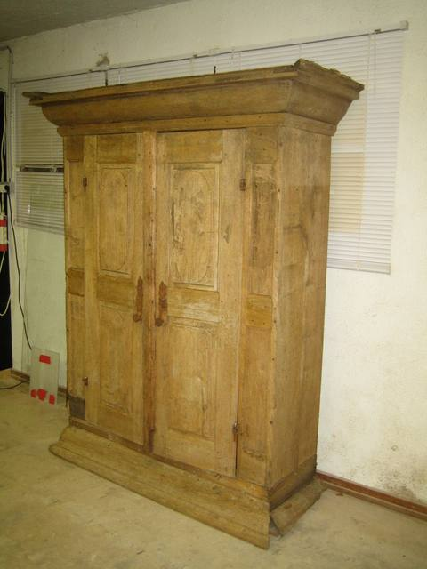
Avant Armoire en merisier
Un meuble d’époque Renaissance, restauré.

Après 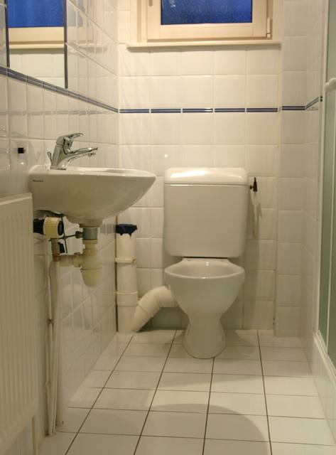
Avant Toilettes d’origine
La même pièce, remise à neuf.
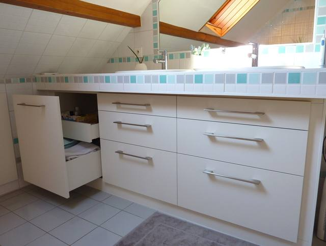
Après 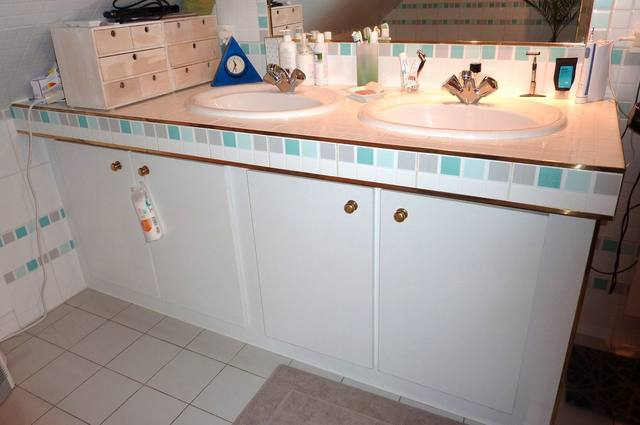
Avant Salle de bains
La partie rangement entièrement refaite.
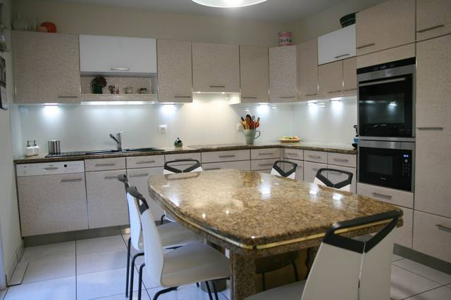
Après 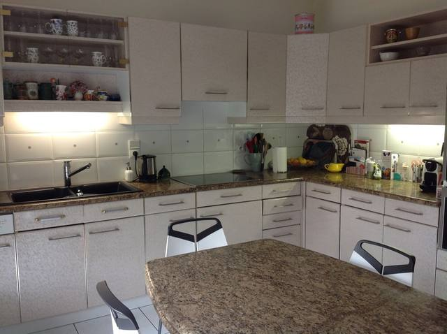
Avant Cuisine
Rénovée sans repartir de zéro.
Les meubles remis en état
 Bureau à cylindre, placage de noyer
Bureau à cylindre, placage de noyer Armoire alsacienne à sept colonnes
Armoire alsacienne à sept colonnes Commode Charles X
Commode Charles X 2 photosCommode en noyer
2 photosCommode en noyer Bureau Louis XVI en noyer
Bureau Louis XVI en noyer 2 photosBoîte à whisky
2 photosBoîte à whisky Armoire en chêne et noyer
Armoire en chêne et noyer 2 photosTables de restaurant rénovées
2 photosTables de restaurant rénovées Armoire lorraine
Armoire lorraine- 2 photosArmoire en merisier
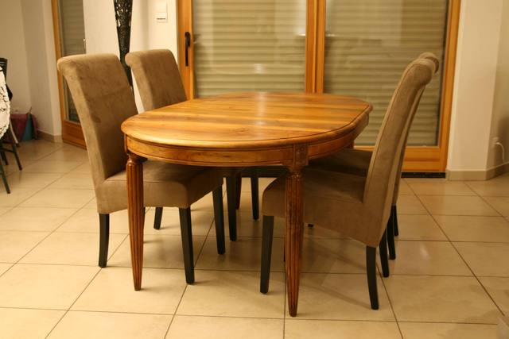
Table en noyer Secrétaire
Secrétaire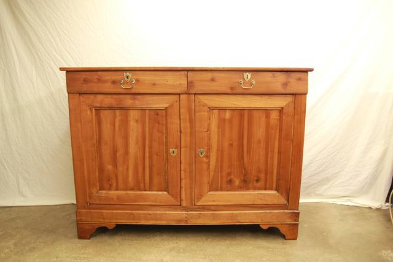
Bahut en merisier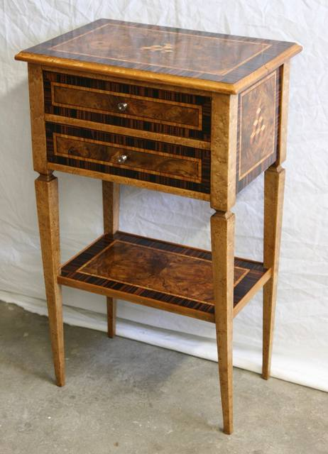
Travailleuse plaquée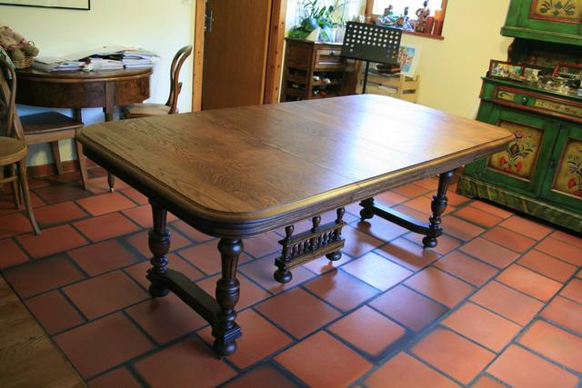
Table ancienne en chêne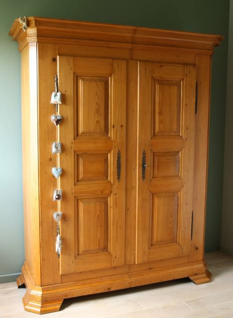
Armoire en sapin Table et banc rénovés
Table et banc rénovés


Un meuble de famille à sauver ?
Envoyez une photo par SMS ou appelez pour en parler.